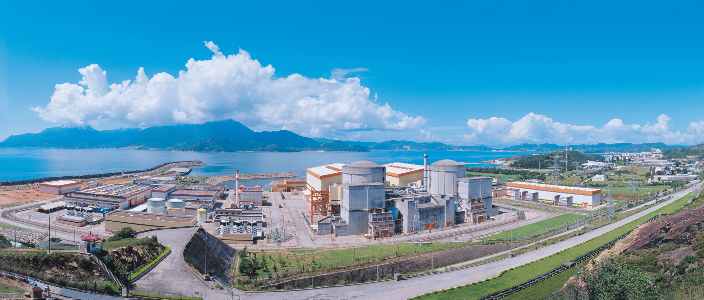

地理位置
大亚湾核电厂位于中国广东省深圳市东南部的大鹏湾畔，是我国第一座大型商用核电站。目前大亚湾核电基地三座核电站六台核电机组总装机容量达612万千瓦，是世界上最大的压水堆核电基地之一。
堆形与数量
2台百万千瓦级压水堆核电机组。
发电基本原理
大亚湾核电厂采用成熟的压水堆技术，其发电过程包括以下三大循环：
- 一回路： 核燃料在反应堆中通过核裂变释放能量，高温高压水将热量传递给二回路水，完成第一循环。
- 二回路： 二回路中的水在蒸汽发生器内吸收热量，变成高压蒸汽推动汽轮机发电，完成第二循环。
- 三回路： 冷凝器利用海水或其他冷却介质使蒸汽冷凝，形成循环水系统，完成第三循环。
功用与贡献
截至2024年6月30日，大亚湾核电基地6台机组已累计实现上网电量9597亿千瓦时，环保效益相当于种植近216万公顷森林，面积可覆盖11个深圳或20个香港，为推动粤港澳大湾区绿色低碳转型、生态文明建设贡献力量。其中，大亚湾核电站2台机组累计实现上网电量4334.94亿千瓦时，输送香港的电量累计达3145亿千瓦时，占香港总用电量的四分之一，为粤港澳大湾区注入了源源不断的清洁电力。
